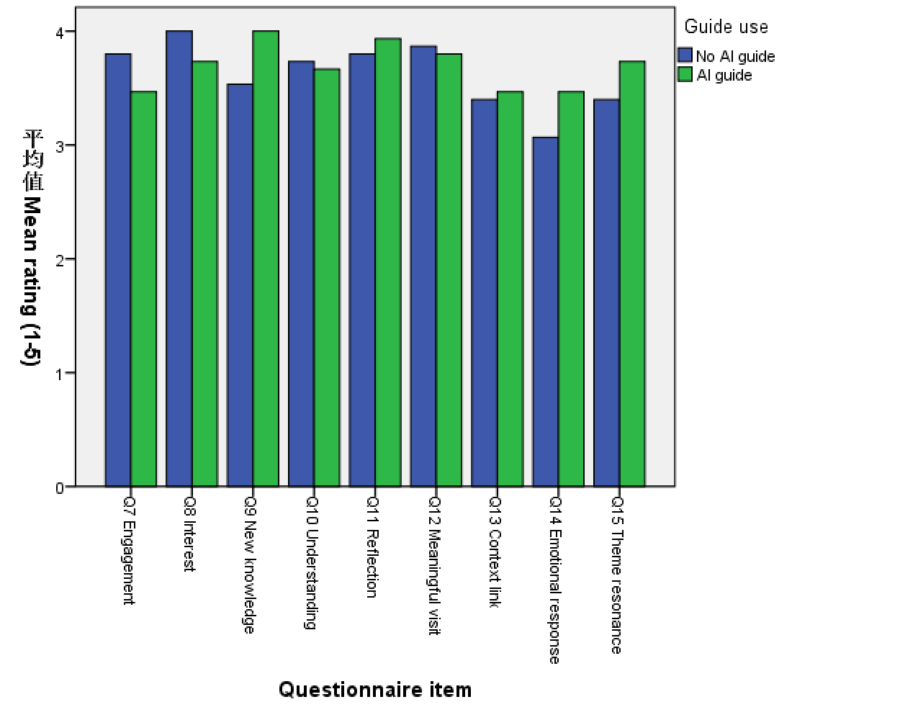

XJTLU Museum | Visitor experience study | Group H
AI-guided museum visits
A 30-student comparison of post-visit experience with the museum AI guide and a labels-only visit.
Do post-visit experience ratings differ between students who used the XJTLU Museum AI guide and students who toured without it?
 Full report
Full reportkinger-ai.github.io

AI guide and labels-only visit
17 undergraduate and 13 postgraduate
Q7-Q15, 1-5 ordinal scale
Valid item ratings, no missing values
01 Why this study
Museum experience covers engagement, learning, meaning, and emotional connection. AI guides may change these outcomes, but controlled museum evidence remains uneven.
The closest precedent compares a generative chatbot with a museum app. This study uses a different baseline: an AI guide versus labels only.
02 Design
03 Measures
04 Group means

05 What moved
The direction was mixed. Q9 showed the largest descriptive gain for the AI group, while Q7 and Q8 favoured the no-AI group.
06 Reading
The small sample, brief exposure, self-report outcomes, and lack of a primary endpoint limit the claim. A stronger study should verify allocation and collect task-level evidence alongside the questionnaire.
07 Test results
| Item | Δ | Z | Raw p | Holm p |
|---|---|---|---|---|
| Q7 Engagement | -0.33 | +1.084 | .278 | 1.000 |
| Q8 Interest | -0.27 | +0.978 | .328 | 1.000 |
| Q9 New knowledge | +0.47 | -1.199 | .230 | 1.000 |
| Q10 Understanding | -0.07 | +0.248 | .804 | 1.000 |
| Q11 Reflection | +0.13 | -0.310 | .757 | 1.000 |
| Q12 Meaning | -0.07 | +0.493 | .622 | 1.000 |
| Q13 Context | +0.07 | -0.157 | .875 | 1.000 |
| Q14 Emotion | +0.40 | -0.999 | .318 | 1.000 |
| Q15 Resonance | +0.33 | -0.794 | .427 | 1.000 |
08 Analysis note
Two-sided Mann-Whitney U tests treat each item as ordinal. Holm correction covers nine comparisons. Signed Z gives rank direction; positive values favour no AI.
09 Next study
- Verify the allocation procedure.
- Pre-specify one primary outcome.
- Recruit a larger sample.
- Add task success and recovery evidence.
What this study says to the museum
Useful extra interpretive layer
The AI group had higher descriptive means on five outcomes. Q9 new knowledge showed the clearest potential benefit, with a +0.47 mean gap.
No reliable advantage in this sample
No adjusted comparison reached .05. The small sample, self-report outcomes, and allocation record prevent a causal claim and leave modest effects uncertain.
Keep AI optional and test the interaction
Retain labels as the dependable baseline. Add task-based testing for question-asking, navigation, and recovery, then compare a larger group with a pre-specified primary outcome.
Selected references
- Wang & Matviienko. Generative AI museum chatbot. ACM IMX, 2025.
- Noh & Hong. Reenacted museum chatbots. Applied Sciences, 2021.
- Tue, Pohl & Merritt. Conversational museum guide. DAACH, 2026.
- Xia et al. AI-guide language strategies. Behavioral Sciences, 2025.
- Othman, Petrie & Power. Museum experience scales. INTERACT, 2011.
- Mann & Whitney. Rank comparison. Annals of Mathematical Statistics, 1947.
- Holm. Sequential multiple-test procedure. Scandinavian Journal of Statistics, 1979.